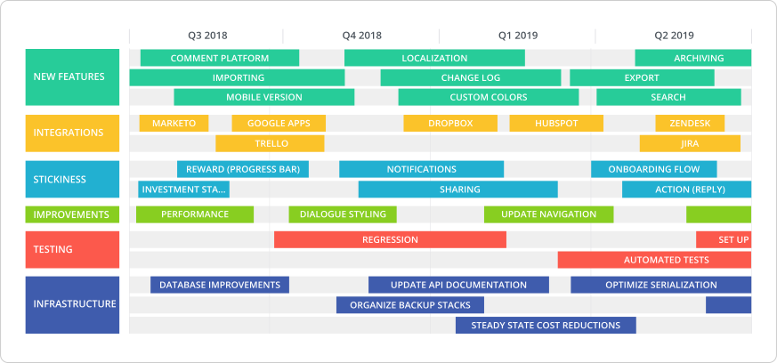
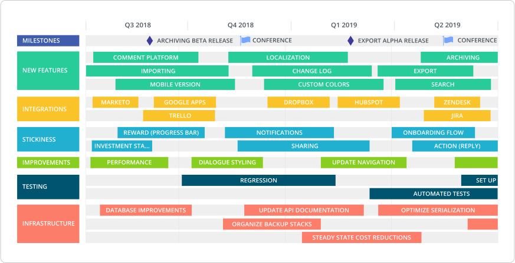
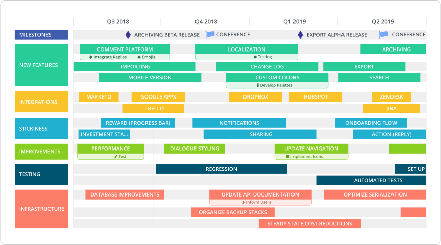
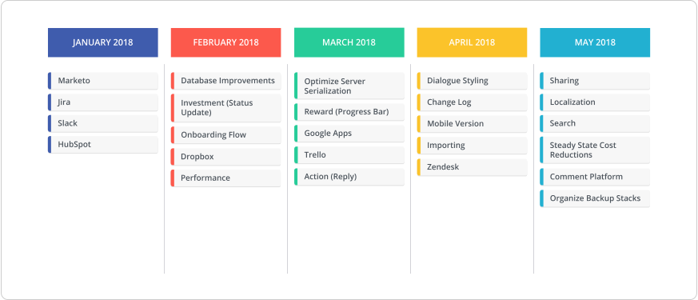
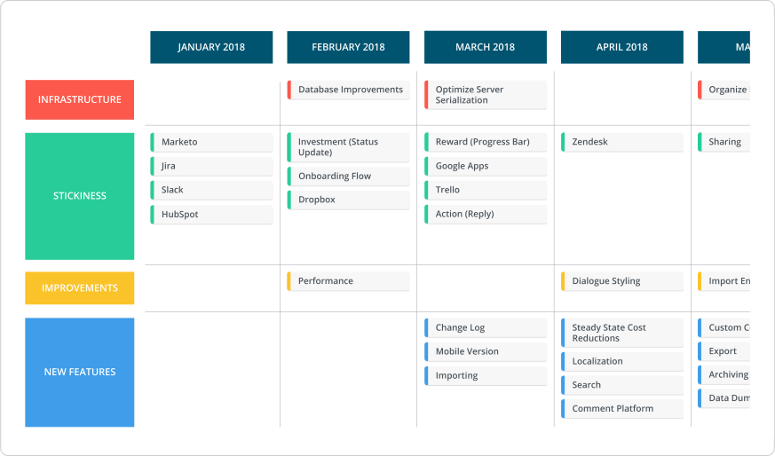
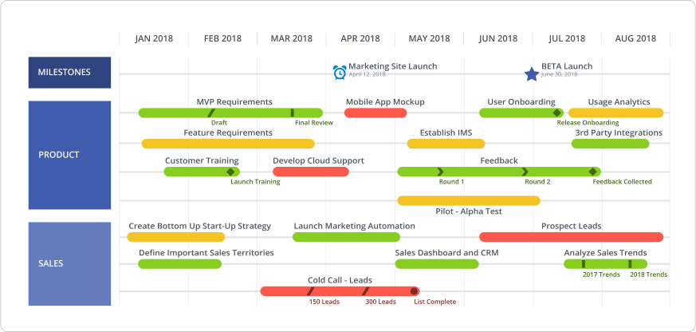
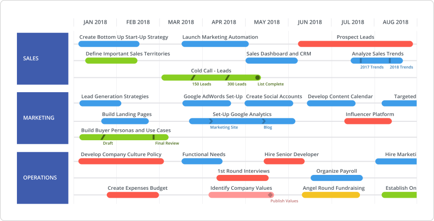

A roadmap should — and this is going to sound banal — be pretty.
A visual roadmap is a communication tool. They’re created and presented to get all stakeholders, executives and your entire team aligned on one strategy. Projecting an ugly, hard-to-read roadmap onto a boardroom wall will obscure the story you’re trying to tell, muddle your objective to achieve buy-in and bottleneck your execution.
At Roadmunk, we find it helpful to approach building a roadmap as an exercise in information design.
An effective roadmap design hinges on the deliberate use of visual elements and copy to turn your vision into a consumable, actionable plan.
Below are some tips for creating a roadmap that is boardroom-worthy.
Find a frame that fits your roadmap
First step: look at the big picture.
There are times when a roadmap requires a brain dump of ideas, or extensive detailing of items — and that’s okay. You need to work on the micro-level to ensure that the necessary content is there. But when it comes time to present your roadmap, take a moment to consider that your audience might be seeing your roadmap for the very first time.
How much information are you trying to display? Are weekly projects uncomfortably crowded when you project the next 12 months? Are your year-long initiatives getting cut off when you’re only looking at next quarter?
This is the importance of a timescale on a roadmap. It sets the stage for your items and helps (or hinders) the strategy you’re presenting in the boardroom.

This could mean taking your annual roadmap with 100 weekly projects and presenting four separate timelines — one for each quarter. Breaking it down into digestible pieces will help deliver a clear picture of how progress will shake out in smaller chunks of time.
Mark milestones and key dates
Milestones and Key Dates both provide the ability to add an extra layer of context and detail to a roadmap. We like to reserve Milestones for high-level achievements and dates that are important for company alignment, while Key Dates are more granular and are meant to align at the project team level.
Milestones pop out on a roadmap because they are treated with distinct symbols and colors. In design-speak, it’s called a visual hierarchy. When there are different levels of ‘stuff,’ the audience is able to scan through quicker and discern the important bits.
In other words, Milestones play well in the boardroom because it gives the audience something to anchor their attention to.

Psst... this roadmap was built in Roadmunk. Try one of our templates (they look great in boardrooms.)
To maximize the impact that Milestones have, use them sparingly and with purpose. There are two useful functions that Milestones have on roadmaps:
1. Internal milestones mark a significant event in the context of the roadmap activity, such as a launch or release of the product. This type of milestone is really an end-goal to a stretch of effort. Visually emphasizing these events adds a focal point to the roadmap. It gives reason and purpose to the activity and efforts that lead up to it.
2. External milestones mark significant events that aren’t a result of the activities on your roadmap, and maybe not even of your organization. They still have relevance and impact to your roadmap though (a big tradeshow or conference, for example). These types of milestones need visual distinction, but perhaps not as much emphasis. They are there to give context to the roadmap — not distract.
Milestones generally do not live within a roadmap item, given that they’re marking an important event that is happening because of, or alongside of the work being done within, roadmap items.
Key Dates, however, live within roadmap items. They can be used to call out important events within a roadmap item, like the due date of a deliverable. They also break up lengthy roadmap items to provide visibility into how progress is being benchmarked.
A common product management tactic is to bucket progress into stages, like design > development > QA > release.
Key Dates help in creating alignment around the expected completion of each stage.

Give Milestones and Key Dates a whirl by signing up for a free 14-day trial of Roadmunk.
Key Dates can also be used as decision points—or gates—within an item. Each Key Date indicates that a team needs to determine whether they can or cannot move forward based on the status of important deliverables, risk analysis, available resources, etc.
Pivot your data to tell a story
Roadmaps can get messy. There’s often a lot of things being fed into this one living document. But you’re doing yourself a disservice if you don’t organize all of this data into manageable groups. You’ll miss out on smaller narratives within the larger story.
Imagine roadmapping a company’s tactics for the first two quarters of each year. There are no hard dates yet—so instead, create six buckets (one for each month). The result will look like a series of monthly mile-long laundry lists.

Imagine we pivot that roadmap on initiatives, i.e. creating subgroups for each month. The roadmap now instantly highlights that a team is focusing heavily on retention in Q1 and new features in Q2. These types of pivots make for much more compelling stories in a roadmap presentation.

Don’t be afraid to experiment when pivoting your data. (If you’re roadmapping digitally, endless pivots are easy!) If you typically group items by product line, try grouping items by department. Maybe you’ll catch some downtime or highlight stretches of stress.
Harness the power of color
A roadmap uses color to make it attractive. A smart roadmap uses color to tell a story. The power of color lies in its magical ability to convey relationships. A roadmap has a web of connections between items – most of them unseen. Plotting them on a timeline or pivoting on a characteristic, reveals some of these relationships by proximity. (This is ordering or grouping items with meaning.) Color-coding items visualizes an additional layer of relationships. So be strategic with color: assign colors specific meaning that will help your strategy.

A common color assignment is by status. As seen above, even a simple three-color palette — red for backlog, yellow for progress, and green for done — is enough to concisely convey progress and identify bottlenecks.

Alternately, coloring by initiative can surface an important axis of your strategy. A timeline pivoted on department, neatly grouping items for each team, can show your audience that in the above case your strategy’s key component is integrations, thanks to the prominence of blue-colored items across all departments.
Scrub your labels clean
Keep labels short and sweet! Word economy is important in roadmapping. It’ll help people read your roadmap quicker and not get stuck parsing out a sentence-long label trying to identify when that thing is. We like to think of it as practicing good label hygiene.
One way to scrub your labels clean is to embrace abbreviations. If your team repeats common words or phrases, consider adopting abbreviations that are easy for your audience to decipher. For example, “Marketing” becomes “mrk” and “Development” becomes “dev”. Roadmaps are a visual medium to showcase how your strategy is going to play out over time. Too much copy = clutter.